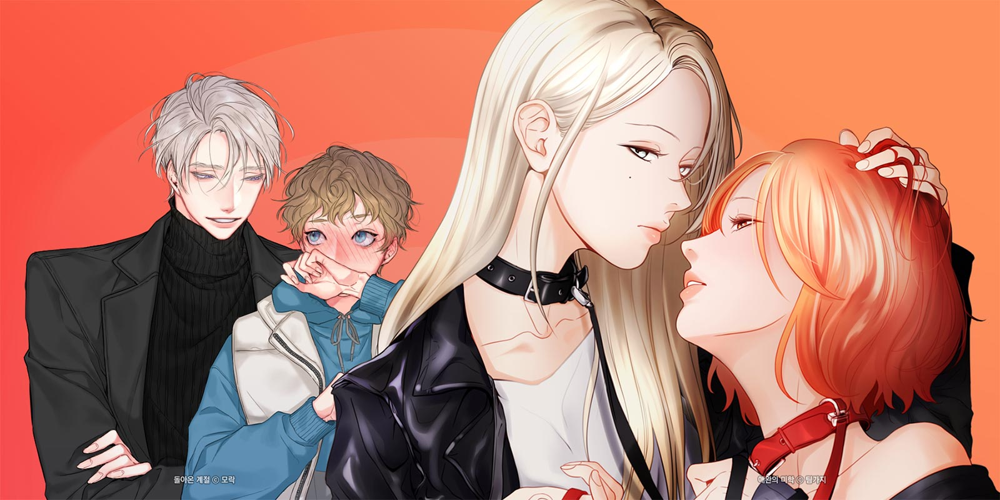
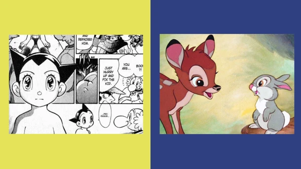
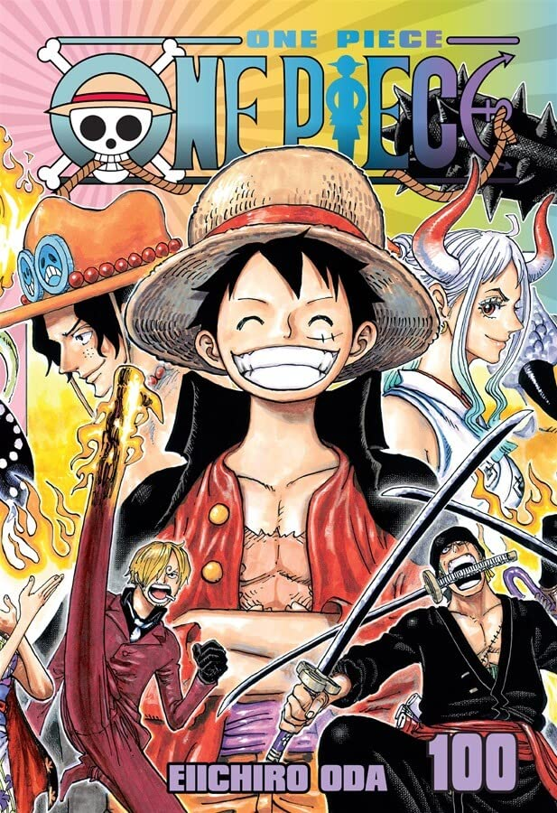
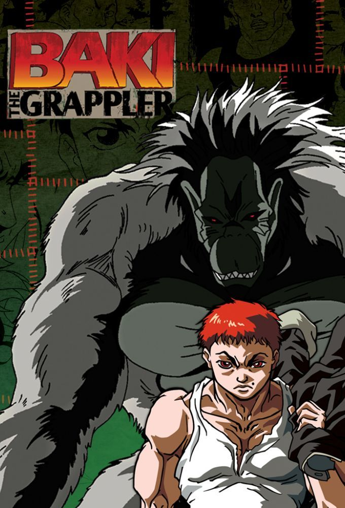
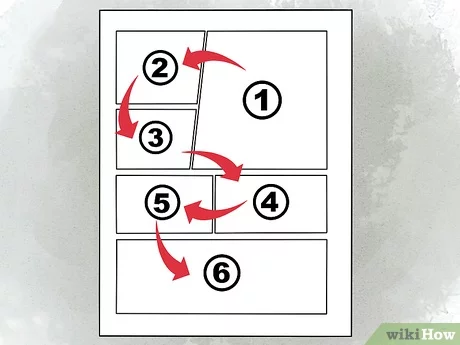
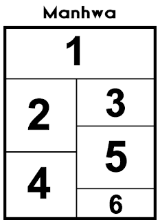

1- Manga é o nome dado para as histórias em quadrinho japonesas, caracterizadas por serem lidas da direita para a esquerda, ao contrário das convencionais HQ’s ocidentais.
Sua origem está no Teatro das Sombras,que na época do Japão feudal percorria diversos vilarejos contando lendas por meio de fantoches.Essas lendas acabaram sendo escritas em rolos de papel e ilustradas,dando origem às histórias em sequência,e consequentemente originando os mangás.
Vários mangás dão origem aos animes, que são exibidos na televisão, em vídeo ou cinemas, mas também há o processo inverso, quando os animes tornam-se uma edição impressa de história em sequência ou de ilustrações.
2- Manhwa, de origem coreana, aposta na internet como um repositório de suas obras e adota a leitura da esquerda para a direita, padrão em HQs americanas e outras publicações ocidentais. Apesar disso, os títulos se apoiaram muito no modelo japonês durante sua concepção e, assim como no mangá, as histórias coreanas costumam abordar os mais variados gêneros, frequentemente indo para os lados da ação ou romance. Outra particularidade das obras coreanas é que são mais comumente adaptadas para o formato de doramas (saiba mais sobre esse tipo de conteúdo aqui) ou filmes live-action, enquanto no Japão é comum ver as histórias mais populares virando anime.
Na última década, porém, isso parece ter começado a mudar. Títulos coreanos foram adaptados por estúdios japoneses e ganharam versões em anime, por exemplo, o manhwa Noblesse, que foi adaptado em OVA pelo Production I.G. (nós já visitamos esse estúdio, saiba mais) em 2016, e deve ganhar nova versão, como série de TV animada, ainda em 2020. Mais recente, podemos citar Tower of God, produção original da Crunchyroll, que estreou na temporada de primavera de 2020 no Japão. O anime adapta a webtoon de mesmo nome, que faz sucesso internacional graças à sua distribuição pela internet.
3- O manhua costuma apresentar traços menos exagerados e caricatos do que estamos acostumados a ver nos mangás, chegando mais próximo do realismo, e geralmente são bastante detalhados. Uma curiosidade é que a orientação de leitura de um manhua pode variar dependendo do local onde a obra for criada: caso tenha sido feita em Hong Kong ou Taiwan, as comics são lidas como mangás, da direita para a esquerda; mas se tiverem sido criadas na China continental, provavelmente terão leitura da esquerda para a direita como os manhwas.
obras chinesas são afetadas pela implacável e restritiva censura.
curiosidades
Censura Chinesa
Apesar dessa rigidez, curiosamente, os manhuas mais populares são justamente os protagonizados por casais LGBT+ — os BL (boys love) e GL(girls love): assuntos considerados tabu por lá.

Por que os olhos dos personagens de mangá são tão grandes?
tendência tão difundida tem sua origem em Osamu Tezuka, criador do mítico Astroboy. Embora talvez fosse mais correto dizer que sua origem seja a adoração de Tezuka pela animação dos filmes de Walt Disney. Bambi era um de seus favoritos e confessou tê-lo visto mais de 80 vezes.
O estilo dos filmes da Disney das décadas de 30 e 40 obcecou Tezuka, que tomou emprestados os olhos grandes e expressivos de seus personagens para a própria obra. Como seu trabalho foi um dos fundadores do mangá moderno, esse traço permaneceu no desenho de personagens até hoje.

Qual o mangá mais vendido de todos os tempos?
Superando clássicos como Dragon Ball Z, o mangá mais vendido de todos os tempos é One Piece, de Eiichiro Oda. E como a história continua sendo publicada, é provável que este posto permaneça por muito tempo.

As árvores de flores de cerejeiras nos animes e mangás
A flor de cerejeira é um dos símbolos icônicos da cultura japonesa.Portanto, não poderia ficar fora dos animes e mangás.Sempre que conseguem,os criadores incluem essa maravilhosa árvore em suas animações, ou então nomeando seus personagens,como a Sakura do desenho Naruto e também a valente menina de Sakura Card Captor.
Maior manga:Grappler Baki
Volumes: 141 | Capítulos: 1.227 | Publicação: Outubro de 1991 - Em Andamento
Os melhores arcos de Shonen são baseados em competições de luta e Grappler Baki consiste basicamente em torneios de lutas frenéticas e grandes combates.
Baki Hanna, é um lutador que sonha em superar seu pai, Yujiro Hanma que é conhecido como o homem mais forte do mundo, e por isso ele viaja o mundo treinando e desafiando grandes lutadores. A série com 30 anos de publicação é um clássico dos mangás.

Como ler
Manga

Manhwa

Manhua
a orientação de leitura de um manhua pode variar dependendo do local onde a obra for criada: caso tenha sido feita em Hong Kong ou Taiwan, as comics são lidas como mangás, da direita para a esquerda; mas se tiverem sido criadas na China continental, provavelmente terão leitura da esquerda para a direita como os manhwas.
Gêneros e Recomendações
Ação
Um trabalho tipicamente retratando luta, violência, caos e movimento rápido.
Recomendação
Naruto
Demon Slayer
One Piece
Aventura
Explorar novos lugares, ambientes ou situações. Isso é frequentemente associado a pessoas em longas jornadas para lugares distantes, encontrando coisas incríveis.
Recomendação
Bleach
Sword Art Online(SAO)
Avatar
Comédia
Um trabalho dramático que é leve e muitas vezes humorístico ou satírico em tom e que geralmente contém uma resolução feliz do conflito temático.
Recomendação
Horimiya
Spy x Family
Aharen-san wa Hakarenai
Drama
Um trabalho destinado a provocar uma resposta emocional, como instilar tristeza ou tensão. Romances que muitas vezes mostram a vida ou personagens através de conflitos e emoções. Em geral, as diferentes partes da história tendem a formar um todo maior que a soma das partes. Em outras palavras, a história tem uma mensagem que é maior do que apenas o enredo em si.
Recomendação
Violet Evergarden
Angel Beats!
Charlotte
Ecchi
Possivelmente a linha entre hentai e não-hentai, ecchi geralmente se refere ao fanservice colocado para atrair um certo grupo de fãs.
Recomendação
Shimoneta(+16)
Shokugeki no Souma(+14)
Monster Mosume(+16)
Slice of life
Romances sem enredo focado. Este gênero tende a ser naturalista e concentra-se principalmente em torno dos personagens principais e suas vidas cotidianas. Muitas vezes, haverá algumas perspectivas filosóficas sobre amor, relacionamentos, vida etc. ligadas ao romance. Os humores gerais típicos para esse tipo de história são alegres e despreocupados, sem pressa para os personagens.
Recomendação
Ano hi mita
ReLIFE
Clannad
Fantasia
Qualquer coisa que envolva, mas não se limite a, magia, mundo dos sonhos e contos de fadas.
Recomendação
Fairy Taill
Mahou Shoujo Madoka(+15)
KonoSuba
Magia
Esses mangas são variados podendo apresentar um mundo inteiramente com elementos mágicos ou implementar em nossa 'realidade' a mesma das mais diversas formas
Recomendação
The Irregular at Magic High School
Black Clover
Radiant
Sobrenatural
os temas sobrenaturais são geralmente vinculados a conceitos como oculto ou paranormal. Os milagres religiosos, a magia (não os truques), o contato com a vida após a morte, assim como ideias como reencarnação, as possessões demoníacas, profecias, aquelas entidades sobrenaturais (vampiros, lobisomem, fantasmas), os feitiços, as maldições e até as adivinhações, entre outros, são alguns dos fenômenos que se enquadram dentro do conceito sobrenatural.
Recomendação
Jujutsu Kaisen
BNA
Mushoku Tensei(+14)
Horror/Terror
Está sempre muito ligado à fantasia e à ficção especulativa,e é criado com intuito de causar medo e aterrorizar o telespectador.
Recomendação
Mirai Nikki
The Promised Neverland
Another
Mistério
que gira em torno da solução de um problema ou de um crime. Ele se concentra nos esforços do detetive, investigador particular ou detetive amador para resolver as misteriosas circunstâncias de um problema por meio de pistas, investigações e dedução inteligente.
Recomendação
Danganronpa
Death Parade
Death Note
Psicológico
se refere a narrativas com cenários domesticados nos quais a ação é suprimida e onde as emoções são fornecidas por meio de investigações das psicologias dos personagens principais.Uma característica distintiva de um thriller psicológico é que ele enfatiza os estados mentais de seus personagens: suas percepções,pensamentos, distorções e luta geral para compreender a realidade.
Recomendação
Code Geass
Puella Magi Madoka Magica
Death Note
Romance
Podem ser definidos como aqueles cujo enredo se desenvolve em torno de um envolvimento amoroso entre os protagonistas. Um dos pré-requisitos do gênero é de que o manga tenha um "final feliz"; contudo, alguns filmes com final triste também podem ser considerados filmes do gênero romântico.
Recomendação
Kimi no wa
Bloom Into You
Your Lie in April
Ficção científica
é um gênero de manga que utiliza a ficção científica e a ficção especulativa com base científica de fenômenos que não são totalmente aceitos pela ciência moderna, como formas de vida extraterrestre, outros planetas, percepção extra-sensorial e viagem no tempo, juntamente com elementos futuristas tais como naves espaciais, robôs, ciborgues, rebelião das máquinas, viagens interestelares ou outras tecnologias. Animes de ficção científica têm sido muitas vezes usados para se concentrar em questões políticas ou sociais, e para explorar questões filosóficas como a condição humana.
Recomendação
Ghost in the shell
Steins;Gate
Cowboy Bebop
Thriller
Tanto o ato de esconder informações importantes do leitor/espectador como cenas de perseguições são características comuns em todos os subgêneros de thrillers.Outra grande característica do thriller são os clímax criados para prender os leitores/telespectadores.
Recomendação
Munou no Nana
Mirai Nikki
Re:zero
Esporte
Os mangas japoneses que têm o esporte como tema principal ou pano de fundo também são um sucesso. Nesse tipo de trama, são abordadas as dificuldades e, claro, as superações existentes no mundo esportivo, além dos laços criados no meio do caminho, o que dá um toque especial para esse gênero de anime.
Recomendação
Haikyuu
Kuro no BASKET
One Piece
Yuri
Yuri é um termo japonês que significa "Amor de Garota" e que é normalmente utilizado para caracterizar animes,a relações amorosas entre duas mulheres.
Possui um sub-gênero chamado Shoujo-ai cujo o foco principal é mostrar uma face mais calma e muitas vezes com menos apelações do que o gênero Yuri.Esse gênero ainda possui uma nomenclatura mais geral chamado Girls Love(Gl) onde normalmente engloba o Yuri e o Shoujo-ai em uma unica categoria
Recomendação
Naruto
Demon Slayer
One Piece
Yaoi
Também conhecido em wasei-eigo em japonês: Boys' Love ou BL é um gênero de publicação que tem o foco em relações homossexuais entre dois homens. O termo se originou no Japão e inclui mangá, anime, romances e dōjinshis. O yaoi se expandiu para além do Japão; materiais podem ser encontrados nos Estados Unidos, assim como em nações ocidentais e orientais ao redor do mundo.
Recomendação
Naruto
Demon Slayer
One Piece
Harem
Na cultura japonesa, o harém é um gênero de manga(desenhos animados e revistas em quadrinho japoneses) característico por apresentar um protagonista masculino ou feminino que é sempre rodeado por personagens do sexo oposto.
Normalmente um harem entorno de uma protagonista feminina é chamado de harem reverso
Recomendação
Naruto
Demon Slayer
One Piece
Mecha
Um mecha (メカ meka?, abreviatura de mechanical, inglês para mecânico) é um robô gigante (geralmente bípede) controlado ou não por um piloto ou controlador, comuns em algumas obras de ficção científica, mangá e anime. Um mecha geralmente é uma máquina de guerra ou combate com pernas, cujos principais oponentes são monstros gigantes ou outros mechas. Geralmente são construídos em formato antropomórfico (de ser humano) ou de animais.
Recomendação
Naruto
Demon Slayer
One Piece
Sobrevivência
É um anime onde o personagem principal é colocados em situações onde sua vida depende de certas escolhas para conseguir sair vivo,mas também existe situações onde o gênero adquire um contexto mais amplo como o destino do planeta ou universo como Darling in the Franxx
Recomendação
Naruto
Demon Slayer
One Piece
Apocalíptico
É outro gênero bem auto-explicativo onde tem início em um apocalipse ou em vários casos em um mundo pós-apocalíptico.As situações de vida do personagem principal varia muitas vezes assim como seu entorno como o famoso anime Doctor Stone,um anime onde a humanidade fica petrificada por um longo período de tempo,a unica referencia que temos de tempo é que o personagem principal acorda de 4000 anos depois voltando para a idade da pedra,assim como Darling in the Franxx onde a humanidade tem que sobreviver contra monstros gigantes
Recomendação
Naruto
Demon Slayer
One Piece
Tragedia
No mundo dos manga esse gênero muitas vezes esse gênero aparece no inicio ou no meio da obra,mas também exite obras onde a trama da obra é colocada no foco de toda obra como AnoHana onde o personagem principal consegue ver o fantasma da garota que ama
Recomendação
Naruto
Demon Slayer
One Piece
Vida Escolar
Como o próprio nome do gênero diz as obras consistem na vida escolar do personagem principal,mas não se engane pensando que esses mangas não podem te fazer chorar litros como,Angel Beats,ou fazer você morrer de medo de um guarda chuva,another,mesmo sendo um gênero simples muitas vezes é subestimado
Recomendação
Naruto
Demon Slayer
One Piece
Crime
Esta tag é usada para descrever romances que apresentam crimes com destaque, sejam eles realizados pelo protagonista ou não. Romances com essa tag geralmente envolvem a polícia, crimes não resolvidos e/ou criminosos.
Recomendação
Naruto
Demon Slayer
One Piece
Artes Marciais
A obra possui um foco claro em lutas,mas no caso dos manga coreanos ou chineses podem representar um enredo de cultivo,Se você não sabe o que é um mundo de cultivo, são animes que tem como temática as artes marciais e a filosofia Taoista, e esses animes de cultivo estão ficando cada vez mais conhecidos no mundo todo, graças a globalização que permitiu aos donghuas de cultivação saírem da China e chegarem ao público mundial.
Recomendação
Naruto
Demon Slayer
One Piece
Musica
A musica tem importância para a trama principal.
Recomendação
Naruto
Demon Slayer
One Piece
Xianxia
É um gênero na literatura chinesa desenvolvido a partir de Wuxia , e se traduz em "herói imortal". Esses mangás, tipicamente chineses Manhua , apresentam personagens que cultivam Qi, normalmente para alcançar a imortalidade, ao contrário de suas contrapartes Wuxia que usam o cultivo para simplesmente crescer mais forte. As histórias de Xianxia apresentam elementos de fantasia como magia , demônios , deuses e seres imortais.